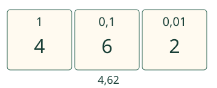
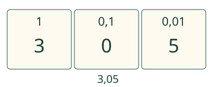

Aava lajittelee lukukortit paikoilleen.
Erotan luvun osat niin, että arvo säilyy.
Miksi osien arvot eroavat?
4,62 ei ole 4 + 6 + 2
Ota yksi paperineliö kokonaiseksi. Jaa se kymmeneen yhtä suureen osaan ja yksi niistä vielä kymmeneen. Pienin pala on sadasosa. Luvussa 4,62 = 4 + 0,6 + 0,02: neljä kokonaista, kuusi kymmenesosaa ja kaksi sadasosaa. Numero kertoo määrän, paikka kertoo yksikön.

Nolla jättää paikan
3,05 = 3 + 0 + 0,05. Kymmenesosia ei ole. 3,5 olisi kolme ja viisi kymmenesosaa, eri määrä. Luvussa 4,062 = 4 + 0 + 0,06 + 0,002 kuusi tarkoittaa sadasosia ja kaksi tuhannesosia.

Osista takaisin luvuksi
7 + 0,3 + 0,08 on 7,38. 0,3 täyttää kymmenesosat ja 0,08 sadasosat. Järjestyksen vaihto 0,08 + 7 + 0,3 säilyttää summan. 7 + 0,38 on sama arvo, mutta viimeinen osa sisältää kaksi lukuyksikköä. Tässä nimettyihin sarakkeisiin pyydetään niiden erilliset arvot.
Ennakoi: Miksi 1,111:n neljä numeroa 1 eivät tarkoita neljää yhtä suurta osaa?
Katso ajatus
Osat ovat 1, 0,1, 0,01 ja 0,001. Jokainen seuraava yksikkö on kymmenesosa edellisestä.
Kokeile itse
Lisää tutkittavaa: sama summa, eri osat
4,62 = 4 + 0,6 + 0,02 = 4 + 0,62. Myös 3 + 1 + 0,6 + 0,02 on sama arvo. Nimetyt paikka-arvosarakkeet pyytävät kuitenkin tavalliset numerokohtaiset osat. Samanarvoinen muu jako ei ole väärä summa.
Opettajalle ja ilman ruutua
Luokat 3–6. Jäädytetty rooli atomic, node_kind procedure. AND-esitiedot M-DEC-01, M-DEC-02 ja M-DEC-03. Kertomerkintää ei vaadita yleiseksi lisäesitiedoksi; rahaesimerkin kolikoiden arvot annetaan.
Tee paperikortit 4;0,6;0,02 ja koosta 4,62. Vaihda samaan kokonaisuuteen kuuluva osa kymmeneen pienempään, jos oppija tarvitsee tukea. Erota luvun numero ja numeron arvo.
Koulutehtävässä 4,62:n osat voivat olla useita samanarvoisia summia. Tämän sivun nimetyt osakentät tarkistavat vain ilmoitetun tavallisen paikka-arvohajotelman; palautteessa sama summa tunnistetaan erikseen. Tuettu lukualue on 0–9,999 eli enintään tuhannesosat ja yksi kokonaisosan numero. Numeroiden paikkataulukko ei ole mitattu pinta-ala tai fyysinen mittaus. Paikallinen tarkistus koskee vain nykyistä vastausta. Malli ja vihje ovat tukea; ne eivät osoita itsenäistä, viivästettyä tai formaalia hallintaa. Ei aikarajaa, puhe- tai esineiden nimeämispakkoa, tallennusta tai henkilöhistoriaa.
Lopuksi: Miksi 2,048 = 2 + 0 + 0,04 + 0,008? Mikä osa muuttuisi, jos 4 siirtyisi kymmenesosiin?